GC-IRMS data processing example
carbon isotopes in alkanes
2020-04-28
Source:vignettes/gc_irms_example_carbon.Rmd
gc_irms_example_carbon.RmdIntroduction
This is an example of a data processing pipeline for compound-specific Gas Chromatography Isotope Ratio Mass Spectrometry (GC-IRMS) carbon isotope measurements. It can be downloaded as a template (or just to see the plain-text code) by following the Source link above. Knitting for stand-alone data analysis works best to HTML rather than the website rendering you see here. To make this formatting change simply delete line #6 in the template file (the line that says rmarkdown::html_vignette:).
Note that all code chunks that contain a critical step towards the final data (i.e. do more than visualization or a data summary) are marked with (*) in the header to make it easier to follow all key steps during interactive use.
This example was run using isoreader version 1.2.0 and isoprocessor version 0.6.6. If you want to reproduce the example, please make sure that you have these or newer versions of both packages installed:
# restart your R session (this command only works in RStudio)
.rs.restartR()
# installs the development tools package if not yet installed
if(!requireNamespace("devtools", quietly = TRUE)) install.packages("devtools")
# installs the newest version of isoreader and isoprocessor
devtools::install_github("isoverse/isoreader")
devtools::install_github("isoverse/isoprocessor")Load packages
library(tidyverse) # general data wrangling and plotting
library(isoreader) # reading the raw data files
library(isoprocessor) # processing the dataThis analysis was run using isoreader version 1.2.0 and isoprocessor version 0.6.6.
For use as a data processing template, please follow the Source link above, download the raw file and adapt as needed. Knitting for stand-alone data analysis works best to HTML rather than the in-package default html_vignette.
All code chunks that contain a critical step towards the final data (i.e. do more than visualization or a data summary) are marked with (*) in the header to make it easier to follow all key steps during interactive use.
Load data
Read raw data files (*)
# set file path(s) to data files, folders or rds collections
# can be multiple folders or mix of folders and files, using example data set here
# (this is a reduced data set of mostly standards with just a few example samples)
data_path <- iso_get_processor_example("gc_irms_example_carbon.cf.rds")
# read files
iso_files_raw <-
# path to data files
data_path %>%
# read data files in parallel for fast read
iso_read_continuous_flow(parallel = TRUE) %>%
# filter out files with read errors (e.g. from aborted analysis)
iso_filter_files_with_problems()
#> Info: preparing to read 1 data files (all will be cached), setting up 1 par...
#> Info (process 1): reading file 'gc_irms_example_carbon.cf.rds' with '.cf.rd...
#> Info (process 1): loaded 47 data files from R Data Storage
#> Info (process 1): running compatibility checks for outdated files (47/47) c...
#> Info: finished reading 1 files in 6.29 secs
#> Info: encountered 49 problems in total
#> # A tibble: 49 x 4
#> file_id type func details
#> <chr> <chr> <chr> <chr>
#> 1 BF2026__CO2 zero_6V.dxf warni… read_is… cache file created by an outdated v…
#> 2 BF2030__Linearity CO2_.… warni… read_is… cache file created by an outdated v…
#> 3 BF2034__A5_0_5ul.dxf warni… read_is… cache file created by an outdated v…
#> 4 BF2041__A5_3ul.dxf warni… read_is… cache file created by an outdated v…
#> 5 BF2047__A5_3ul.dxf warni… read_is… cache file created by an outdated v…
#> 6 BF2061__OG271_CZO-CTNA_… warni… read_is… cache file created by an outdated v…
#> 7 BF2093__A5_0_5ul.dxf warni… read_is… cache file created by an outdated v…
#> 8 BF2099__A5_0_5ul.dxf warni… read_is… cache file created by an outdated v…
#> 9 BF2106__OG281_CZO-Niwot… warni… read_is… cache file created by an outdated v…
#> 10 BF2114__A5_1_5ul.dxf warni… read_is… cache file created by an outdated v…
#> # … with 39 more rows
#> Info: removing 2/47 files that have any error (keeping 45)Process file info & peak table (*)
# process
iso_files <- iso_files_raw %>%
# set peak table from vendor data table
iso_set_peak_table_automatically_from_vendor_data_table() %>%
# convert units from mV to V for amplitudes and area
iso_convert_peak_table_units(V = mV, Vs = mVs) %>%
# rename key file info columns
iso_rename_file_info(id1 = `Identifier 1`, id2 = `Identifier 2`) %>%
# parse text info into numbers
iso_parse_file_info(number = Analysis) %>%
# process other file information that is specific to the naming conventions
# of this particular sequence
iso_mutate_file_info(
# what is the type of each analysis?
type = case_when(
str_detect(id1, "[Zz]ero") ~ "on_off",
str_detect(id1, "[Ll]inearity") ~ "lin",
str_detect(id1, "A5") ~ "std",
TRUE ~ "sample"
),
# was there seed oxidation?
seed_oxidation = ifelse(`Seed Oxidation` == "1", "yes", "no"),
# what was the injection volume based on the AS method name?
injection_volume = str_extract(`AS Method`, "AS PTV [0-9.]+") %>%
parse_number() %>% iso_double_with_units("uL"),
# what was the concentration? (assuming Preparation = concentration or volume)
concentration = str_extract(Preparation, "[0-9.]+ ?ng( per |/)uL") %>%
parse_number() %>% iso_double_with_units("ng/uL"),
# or the volume?
volume = str_extract(Preparation, "[0-9.]+ ?uL") %>%
parse_number() %>% iso_double_with_units("uL"),
# what folder are the data files in? (assuming folder = sequence)
folder = basename(dirname(file_path))
) %>%
# add in additional sample metadata (could be any info)
# note: this would typically be stored in / read from a csv or excel file
iso_add_file_info(
tibble::tribble(
# column names
~id1, ~sample, ~fraction,
# metadata (row-by-row)
"OG268_CZO-SJER_F1", "SJER", "F1",
"OG271_CZO-CTNA_F1", "CTNA", "F1",
"OG281_CZO-Niwot_Tundra2_F1", "Niwot_Tundra2", "F1",
"OG282_CZO-Niwot_Tundra1_F1", "Niwot_Tundra1", "F1"
),
join_by = "id1"
) %>%
# focus only on the relevant file info, discarding the rest
iso_select_file_info(
folder, Analysis, file_datetime, id1, id2, type, sample,
seed_oxidation, injection_volume, concentration, volume
)
#> Info: setting peak table for 45 file(s) from vendor data table with the following renames:
#> - for 45 file(s): 'Nr.'->'peak_nr', 'Is Ref.?'->'is_ref', 'Start'->'rt_start', 'Rt'->'rt', 'End'->'rt_end', 'Ampl 44'->'amp44', 'Ampl 45'->'amp45', 'Ampl 46'->'amp46', 'BGD 44'->'bgrd44_start', 'BGD 45'->'bgrd45_start', 'BGD 46'->'bgrd46_start', 'BGD 44'->'bgrd44_end', 'BGD 45'->'bgrd45_end', 'BGD 46'->'bgrd46_end', 'rIntensity 44'->'area44', 'rIntensity 45'->'area45', 'rIntensity 46'->'area46', 'rR 45CO2/44CO2'->'r45/44', 'rR 46CO2/44CO2'->'r46/44', 'rd 45CO2/44CO2'->'rd45/44', 'rd 46CO2/44CO2'->'rd46/44', 'd 45CO2/44CO2'->'d45/44', 'd 46CO2/44CO2'->'d46/44', 'd 13C/12C'->'d13C', 'd 18O/16O'->'d18O', 'd 17O/16O'->'d17O', 'AT% 13C/12C'->'at13C', 'AT% 18O/16O'->'at18O'
#> Info: converting peak table column units where applicable from 'mV'->'V' and 'mVs'->'Vs' for columns matching 'everything()'
#> Info: renaming the following file info across 45 data file(s): 'Identifier 1'->'id1', 'Identifier 2'->'id2'
#> Info: parsing 1 file info columns for 45 data file(s):
#> - to number: 'Analysis'
#> Info: mutating file info for 45 data file(s)
#> Info: adding new file information ('sample', 'fraction') to 45 data file(s), joining by 'id1'...
#> - 'id1' join: 4/4 new info rows matched 4/45 data files
#> Info: selecting/renaming the following file info across 45 data file(s): 'folder', 'Analysis', 'file_datetime', 'id1', 'id2', 'type', 'sample', 'seed_oxidation', 'injection_volume', 'concentration', 'volume'Show file information
# display file information
iso_files %>%
iso_get_file_info() %>% select(-file_id, -folder) %>%
iso_make_units_explicit() %>% knitr::kable()
#> Info: aggregating file info from 45 data file(s)| Analysis | file_datetime | id1 | id2 | type | sample | seed_oxidation | injection_volume [uL] | concentration [ng/uL] | volume [uL] |
|---|---|---|---|---|---|---|---|---|---|
| 2026 | 2017-10-25 20:22:23 | CO2 zero | 6V | on_off | NA | no | NA | NA | NA |
| 2030 | 2017-10-25 20:55:44 | Linearity CO2 | NA | lin | NA | no | NA | NA | NA |
| 2034 | 2017-10-26 03:15:48 | A5 | 0.5ul | std | NA | yes | 0.5 | 14 | NA |
| 2041 | 2017-10-26 14:50:38 | A5 | 3ul | std | NA | no | 3.0 | 14 | NA |
| 2047 | 2017-10-26 23:50:04 | A5 | 3ul | std | NA | yes | 3.0 | 14 | NA |
| 2061 | 2017-10-27 19:29:27 | OG271_CZO-CTNA_F1 | 1.5uL | sample | CTNA | yes | 1.5 | NA | 25 |
| 2093 | 2017-10-29 18:32:04 | A5 | 0.5ul | std | NA | yes | 0.5 | 14 | NA |
| 2099 | 2017-10-30 04:33:19 | A5 | 0.5ul | std | NA | yes | 0.5 | 14 | NA |
| 2106 | 2017-10-30 16:25:45 | OG281_CZO-Niwot_Tundra2_F1 | 1.5uL | sample | Niwot_Tundra2 | yes | 1.5 | NA | 150 |
| 2114 | 2017-10-31 04:08:42 | A5 | 1.5ul | std | NA | yes | 1.5 | 14 | NA |
| 2132 | 2017-11-01 12:33:25 | A5 conc | 1ul | std | NA | yes | 1.0 | 140 | NA |
| 2138 | 2017-11-02 01:48:12 | A5 conc | 1.5ul | std | NA | yes | 1.5 | 140 | NA |
| 2027 | 2017-10-25 20:30:42 | CO2 zero | 3V | on_off | NA | no | NA | NA | NA |
| 2031 | 2017-10-25 22:30:54 | A5 | 0.5ul | std | NA | yes | 0.5 | 14 | NA |
| 2035 | 2017-10-26 04:50:43 | A5 | 1.5ul | std | NA | yes | 1.5 | 14 | NA |
| 2044 | 2017-10-26 18:23:25 | A5 | 4.5ul | std | NA | no | 4.5 | 14 | NA |
| 2053 | 2017-10-27 08:49:22 | OG268_CZO-SJER_F1 | 1.5uL | sample | SJER | yes | 1.5 | NA | 50 |
| 2069 | 2017-10-28 06:37:31 | A5 | 1.5ul | std | NA | yes | 1.5 | 14 | NA |
| 2096 | 2017-10-29 23:48:23 | A5 | 1.5ul | std | NA | yes | 1.5 | 14 | NA |
| 2100 | 2017-10-30 06:08:16 | A5 | 1.5ul | std | NA | yes | 1.5 | 14 | NA |
| 2107 | 2017-10-30 18:00:40 | OG282_CZO-Niwot_Tundra1_F1 | 1.5uL | sample | Niwot_Tundra1 | yes | 1.5 | NA | 150 |
| 2115 | 2017-10-31 05:43:46 | A5 | 3ul | std | NA | yes | 3.0 | 14 | NA |
| 2139 | 2017-11-02 09:13:36 | A5 conc | 1ul | std | NA | yes | 1.0 | 140 | NA |
| 2028 | 2017-10-25 20:39:02 | CO2 zero | 1.2V | on_off | NA | no | NA | NA | NA |
| 2032 | 2017-10-26 00:05:49 | A5 | 1.5ul | std | NA | yes | 1.5 | 14 | NA |
| 2036 | 2017-10-26 06:25:48 | A5 | 3ul | std | NA | yes | 3.0 | 14 | NA |
| 2045 | 2017-10-26 20:40:08 | A5 | 0.5ul | std | NA | yes | 0.5 | 14 | NA |
| 2056 | 2017-10-27 13:34:08 | A5 | 1.5ul | std | NA | yes | 1.5 | 14 | NA |
| 2075 | 2017-10-28 14:27:22 | A5 | 1.5ul | std | NA | yes | 1.5 | 14 | NA |
| 2097 | 2017-10-30 01:23:28 | A5 | 3ul | std | NA | yes | 3.0 | 14 | NA |
| 2101 | 2017-10-30 07:43:23 | A5 | 3ul | std | NA | yes | 3.0 | 14 | NA |
| 2116 | 2017-10-31 07:18:39 | A5 conc | 1ul | std | NA | yes | 1.0 | 140 | NA |
| 2136 | 2017-11-01 22:38:25 | A5 conc | 0.5ul | std | NA | yes | 0.5 | 140 | NA |
| 2140 | 2017-11-02 10:48:30 | A5 conc | 2ul | std | NA | yes | 2.0 | 140 | NA |
| 2029 | 2017-10-25 20:47:22 | CO2 zero | 0.7V | on_off | NA | no | NA | NA | NA |
| 2033 | 2017-10-26 01:40:55 | A5 | 3ul | std | NA | yes | 3.0 | 14 | NA |
| 2040 | 2017-10-26 13:07:47 | A5 | 1.5ul | std | NA | yes | 1.5 | 14 | NA |
| 2046 | 2017-10-26 22:15:02 | A5 | 1.5ul | std | NA | yes | 1.5 | 14 | NA |
| 2060 | 2017-10-27 17:54:33 | A5 conc | 1ul | std | NA | no | 1.0 | 140 | NA |
| 2086 | 2017-10-29 07:58:06 | A5 | 1.5ul | std | NA | yes | 1.5 | 14 | NA |
| 2098 | 2017-10-30 02:58:24 | A5 conc | 1ul | std | NA | yes | 1.0 | 140 | NA |
| 2102 | 2017-10-30 09:18:16 | A5 conc | 1ul | std | NA | yes | 1.0 | 140 | NA |
| 2113 | 2017-10-31 02:33:47 | A5 | 0.5ul | std | NA | yes | 0.5 | 14 | NA |
| 2117 | 2017-10-31 08:53:43 | A5 conc | 3ul | std | NA | yes | 3.0 | 140 | NA |
| 2137 | 2017-11-02 00:13:18 | A5 conc | 1ul | std | NA | yes | 1.0 | 140 | NA |
Example chromatograms
# plot the chromatograms
iso_plot_continuous_flow_data(
# select a few analyses (these #s must exist!)
iso_filter_files(iso_files, Analysis %in% c(2046, 2106, 2107)),
# select data and aesthetics
data = c(44), color = id1, panel = Analysis,
# zoom in on time interval
time_interval = c(1000, 3200),
# peak labels for all peaks > 2V
peak_label = iso_format(rt, d13C, signif = 3),
peak_label_options = list(size = 3),
peak_label_filter = amp44 > 2000
) +
# customize resulting ggplot
theme(legend.position = "bottom")
#> Info: applying file filter, keeping 3 of 45 files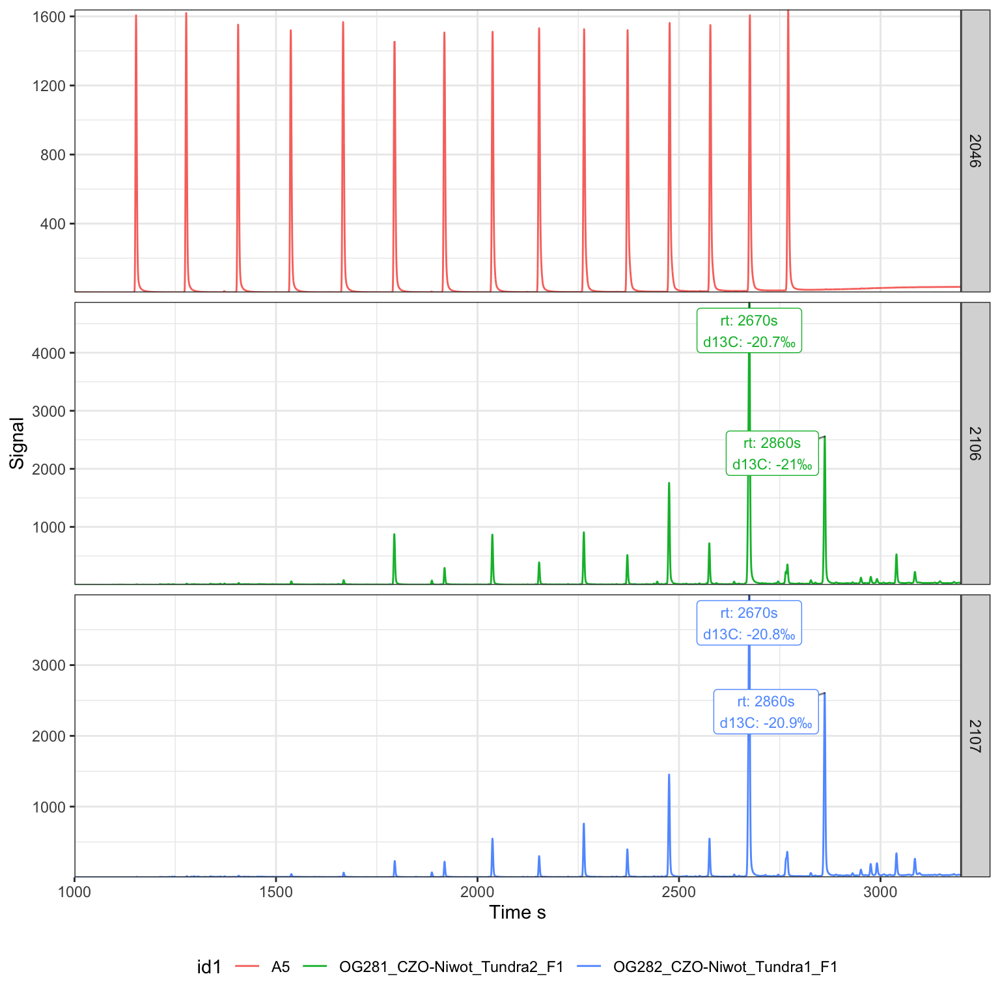
ON/OFFs
# find files with zero in the Identifier 1 field
on_offs <- iso_files %>% iso_filter_files(type == "on_off")
#> Info: applying file filter, keeping 4 of 45 files
# visualize the on/offs
iso_plot_continuous_flow_data(on_offs, data = 44, color = id2)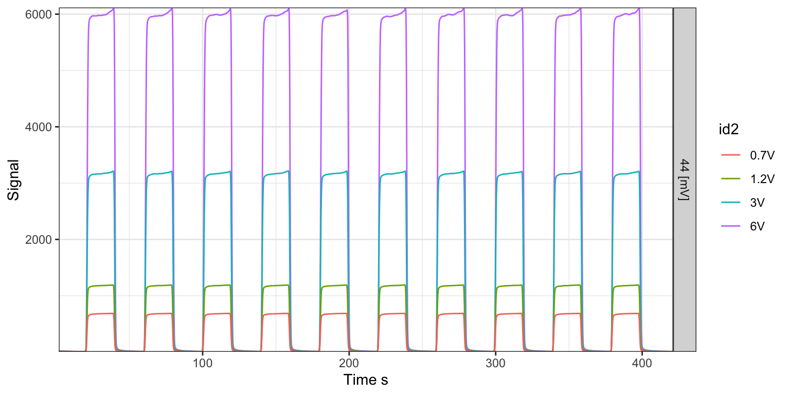
Summary
# calculate on/off summary
on_off_summary <-
on_offs %>%
# retrieve peak table
iso_get_peak_table(
select = c(amp44, area44, d13C),
include_file_info = c(file_datetime, id2)
) %>%
# summarize information
group_by(file_datetime, id2) %>%
iso_summarize_data_table()
#> Info: aggregating peak table from 4 data file(s), including file info 'c(file_datetime, id2)'
# table
on_off_summary %>% iso_make_units_explicit() %>% knitr::kable(digits = 3)| file_datetime | id2 | n | amp44 mean [V] | amp44 sd | area44 mean [Vs] | area44 sd | d13C mean [permil] | d13C sd |
|---|---|---|---|---|---|---|---|---|
| 2017-10-25 20:22:23 | 6V | 10 | 6.091 | 0.010 | 112.848 | 0.330 | 0.006 | 0.012 |
| 2017-10-25 20:30:42 | 3V | 10 | 3.201 | 0.003 | 59.386 | 0.141 | 0.001 | 0.018 |
| 2017-10-25 20:39:02 | 1.2V | 10 | 1.183 | 0.001 | 21.968 | 0.054 | -0.006 | 0.024 |
| 2017-10-25 20:47:22 | 0.7V | 10 | 0.681 | 0.001 | 12.638 | 0.030 | -0.031 | 0.052 |
# plot
on_off_summary %>%
# use generic data plot function
iso_plot_data(
x = file_datetime, y = `d13C sd`,
size = `amp44 mean`, color = id2,
points = TRUE,
date_labels = "%b %d - %H:%M"
) +
# customize resulting ggplot
expand_limits(y = 0) 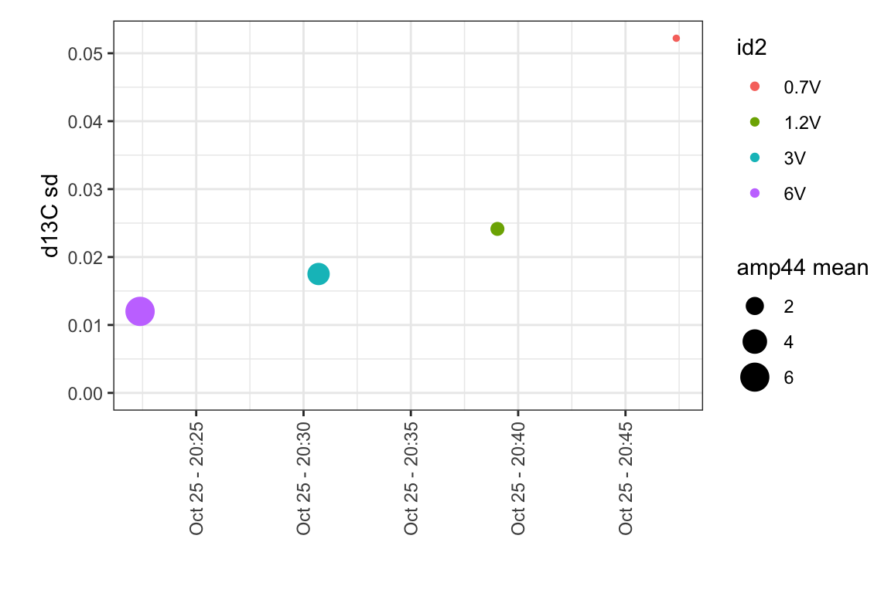
Linearity
# find files with linearity in the Identifier 1 field
lins <- iso_files %>% iso_filter_files(type == "lin")
#> Info: applying file filter, keeping 1 of 45 files
# visualize the linearity runs
iso_plot_continuous_flow_data(lins, data = 44, color = format(file_datetime))
Summary
# calculate linearity summary
linearity_summary <-
lins %>%
# retrieve data table
iso_get_peak_table(
select = c(amp44, area44, d13C),
include_file_info = c(file_datetime)
) %>%
# calculate linearity regression lines
nest(data = -file_datetime) %>%
mutate(
fit = map(data, ~lm(d13C ~ amp44, data = iso_strip_units(.x))),
coefs = map(fit, broom::tidy)
)
#> Info: aggregating peak table from 1 data file(s), including file info 'c(file_datetime)'
# table
linearity_summary %>%
unnest(coefs) %>%
select(file_datetime, term, estimate, std.error) %>%
filter(term == "amp44") %>%
mutate(
term = "linearity [permil/V]",
estimate = signif(estimate, 2),
std.error = signif(std.error, 1)
) %>%
knitr::kable(digits = 4)| file_datetime | term | estimate | std.error |
|---|---|---|---|
| 2017-10-25 20:55:44 | linearity [permil/V] | -0.017 | 0.001 |
# plot
linearity_summary %>%
unnest(data) %>%
# use generic data plot function
iso_plot_data(
x = amp44, y = d13C,
color = format(file_datetime),
points = TRUE,
panel = file_datetime,
geom_smooth(method = "lm")
)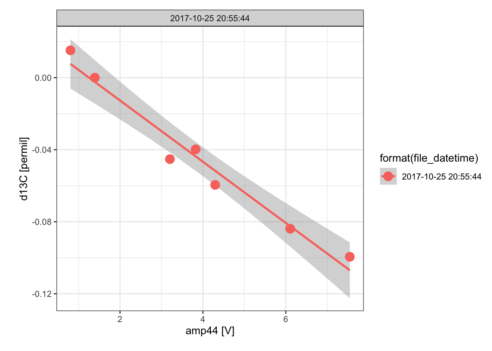
Samples and Standards
Load peak maps
# this information is often maintained in a csv or Excel file instead
# but generated here from scratch for demonstration purposes
peak_maps <-
tibble::tribble(
# column names -> defining 2 peak maps, 'std' and 'sample' here
# but could define an unlimited number of different maps
~compound, ~ref_nr, ~`rt:std`, ~`rt:sample`,
# peak map data (row-by-row)
"CO2", 1, 79, 79,
"CO2", 2, 178, 178,
"CO2", 3, 278, 278,
"CO2", 4, 377, 377,
"CO2", 5, 477, 477,
"CO2", 6, 576, 576,
"CO2", 7, 676, 676,
"CO2", 8, 775, 775,
"CO2", 9, 875, 875,
"nC16", NA, 1156, 1156,
"nC17", NA, 1280, 1280,
"nC18", NA, 1409, 1409,
"nC19", NA, 1540, 1540,
"nC20", NA, 1670, 1670,
"nC21", NA, 1797, 1797,
"nC22", NA, 1921, 1921,
"nC23", NA, 2040, 2040,
"nC24", NA, 2156, 2156,
"nC25", NA, 2267, 2267,
"nC26", NA, 2375, 2375,
"nC27", NA, 2479, 2479,
"nC28", NA, 2580, 2580,
"nC29", NA, 2674, 2678,
"nC30", NA, 2770, 2773,
"nC31", NA, NA, 2863,
"CO2", 10, 3552, 3552,
"CO2", 11, 3592, 3592
)
peak_maps %>% knitr::kable(digits = 0)| compound | ref_nr | rt:std | rt:sample |
|---|---|---|---|
| CO2 | 1 | 79 | 79 |
| CO2 | 2 | 178 | 178 |
| CO2 | 3 | 278 | 278 |
| CO2 | 4 | 377 | 377 |
| CO2 | 5 | 477 | 477 |
| CO2 | 6 | 576 | 576 |
| CO2 | 7 | 676 | 676 |
| CO2 | 8 | 775 | 775 |
| CO2 | 9 | 875 | 875 |
| nC16 | NA | 1156 | 1156 |
| nC17 | NA | 1280 | 1280 |
| nC18 | NA | 1409 | 1409 |
| nC19 | NA | 1540 | 1540 |
| nC20 | NA | 1670 | 1670 |
| nC21 | NA | 1797 | 1797 |
| nC22 | NA | 1921 | 1921 |
| nC23 | NA | 2040 | 2040 |
| nC24 | NA | 2156 | 2156 |
| nC25 | NA | 2267 | 2267 |
| nC26 | NA | 2375 | 2375 |
| nC27 | NA | 2479 | 2479 |
| nC28 | NA | 2580 | 2580 |
| nC29 | NA | 2674 | 2678 |
| nC30 | NA | 2770 | 2773 |
| nC31 | NA | NA | 2863 |
| CO2 | 10 | 3552 | 3552 |
| CO2 | 11 | 3592 | 3592 |
Fetch peak table (*)
# identify peaks
peak_table_w_ids <- iso_files %>%
# focus on standards and samples only
iso_filter_files(type %in% c("std", "sample")) %>%
# filter out analyses that
## a) did not inject
iso_filter_files(!Analysis %in% c(2031, 2040, 2069, 2098, 2116, 2138)) %>%
## b) had double or rogue peaks from mis-injection
iso_filter_files(!Analysis %in% c(2044, 2132, 2134)) %>%
# map peaks
iso_map_peaks(peak_maps, map_id = type) %>%
# peak table
iso_get_peak_table(include_file_info = everything())
#> Info: applying file filter, keeping 40 of 45 files
#> Info: applying file filter, keeping 34 of 40 files
#> Info: applying file filter, keeping 32 of 34 files
#> Info: 829 of 973 peaks in 32 files were successfully mapped using 2 peak maps ('std', 'sample'). 144 peak(s) could not be mapped. 7 expected peak(s) are missing.
#> Info: aggregating peak table from 32 data file(s), including file info 'everything()'Inspect peak mappings
# use same plotting as earlier, except now with peak features added in
iso_files %>%
iso_filter_files(Analysis %in% c(2046, 2106, 2107)) %>%
iso_plot_continuous_flow_data(
# select data and aesthetics
data = 44, color = id1, panel = Analysis,
# zoom in on time interval
time_interval = c(1000, 3200),
# provide our peak table with ids
peak_table = peak_table_w_ids,
# define peak labels, this can be any valid expression
peak_label = iso_format(id = peak_info, d13C),
# specify which labels to show (removing the !is_identified or putting a
# restriction by retention time can help a lot with busy chromatograms)
peak_label_filter = is_identified | !is_identified | is_missing
) +
# customize resulting ggplot
theme(legend.position = "bottom")
#> Info: applying file filter, keeping 3 of 45 files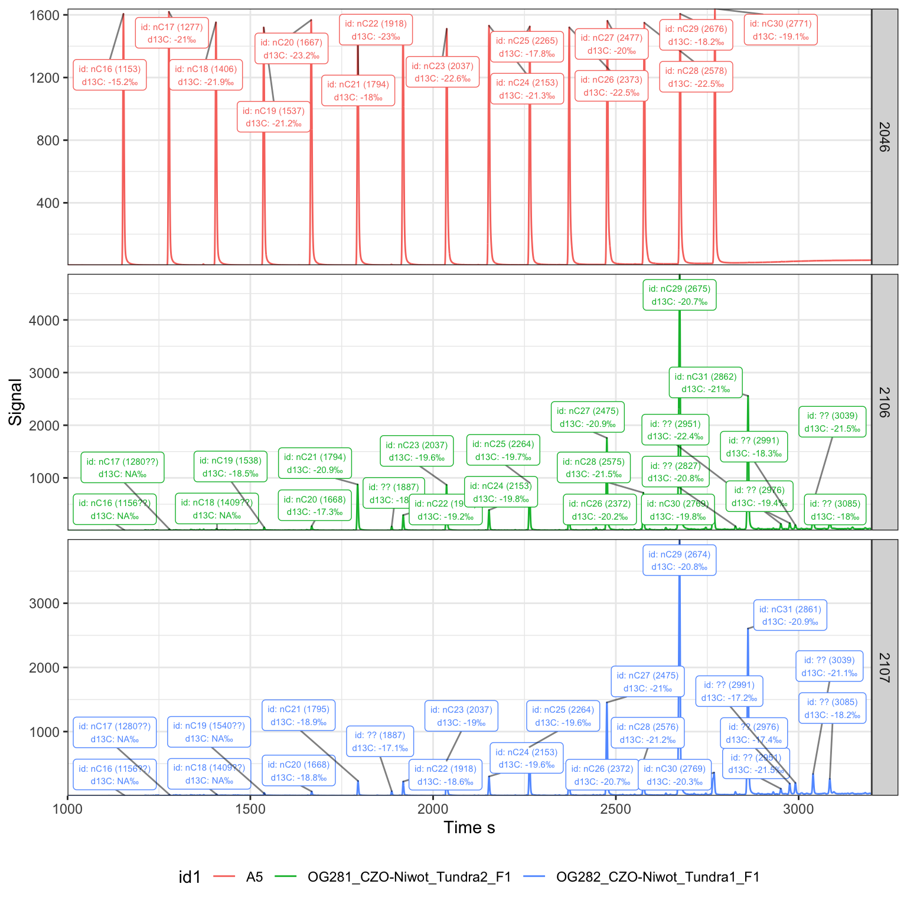
Overview of unclear peak mappings
# look at missing and unidentified peaks summary (not run during knitting)
# -> check if any of the missing peaks are unexpected (should be there but aren't)
# -> check if any unidentified peaks should be added to the peak maps
# -> check if any ambiguous peaks need clearer peak map retention times
# when in doubt, look at the chromatograms of the problematic files!
# as needed: iterate on peak map update, then peak mapping inspection
peak_table_w_ids %>%
iso_get_problematic_peak_mappings() %>%
iso_summarize_peak_mappings()Reference peaks
# examine variation in the reference peaks
peak_table_w_ids %>%
# focus on reference peaks only
filter(!is.na(ref_nr)) %>%
# mark ref peak used for raw delta values (assuming the same in all anlysis)
mutate(
ref_info = paste0(ref_nr, ifelse(is_ref == 1, "*", "")) %>% factor() %>% fct_inorder()
) %>%
# visualize
iso_plot_ref_peaks(
# specify the ratios to visualize
x = Analysis, ratio = `r45/44`, fill = ref_info,
panel_scales = "fixed"
) +
labs(x = "Analysis", fill = "Reference\npeak")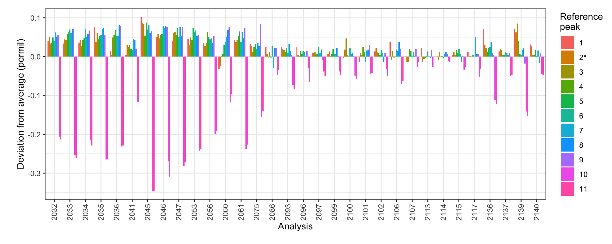
Analyte peaks
Select analyte peaks (*)
# focus on analyte peaks and calculate useful summary statistics
peak_table_analytes <- peak_table_w_ids %>%
# omit reference peaks for further processing (i.e. analyte peaks only)
filter(is.na(ref_nr)) %>%
# for each analysis, calculate a few useful summary statistics
iso_mutate_peak_table(
group_by = file_id,
rel_area = area44 / sum(area44, na.rm = TRUE),
# calculate mean area for all peaks
mean_area = mean(area44, na.rm = TRUE),
# calculate mean area and amplitude for identified peaks
mean_area_identified = mean(area44[!is.na(compound)], na.rm = TRUE),
mean_amp_identified = mean(amp44[!is.na(compound)], na.rm = TRUE)
)
#> Info: mutating peak table grouped by 'file_id', column(s) 'rel_area', 'mean_area', 'mean_area_identified', 'mean_amp_identified' added.First look
peak_table_analytes %>%
# focus on identified peaks (comment out this line to see ALL peaks)
filter(!is.na(compound)) %>%
# visualize with convenience function iso_plot_data
iso_plot_data(
# choose x and y (multiple y possible)
x = area44, y = c(amp44, d13C),
# choose aesthetics
color = compound, shape = type, label = compound, size = 3,
# decide what geoms to include
points = TRUE
) +
# further customize ggplot with a log scale x axis
scale_x_log10()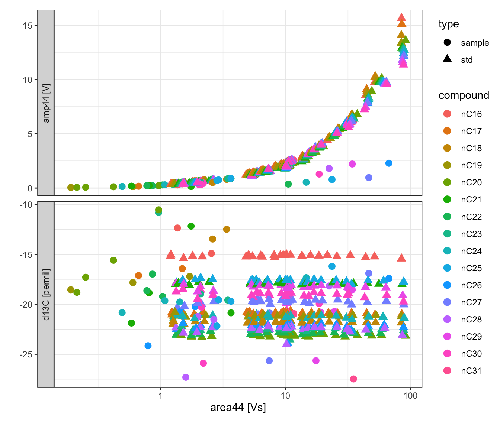
Optionally - use interactive plot
# optinally, use an interactive plot to explore your data
# - make sure you install the plotly library --> install.packages("plotly")
# - switch to eval=TRUE in the options of this chunk to include in knit
# - this should work for all plots in this example processing file
library(plotly)
ggplotly(dynamicTicks = TRUE)Evaluate signal yield
# evaluate yield
# (only makes sense if both injection volume and concentration are available)
peak_table_analytes %>%
# focus on standards
filter(type == "std") %>%
# calculate injection amount
mutate(injection = iso_double_with_units(
as.numeric(injection_volume) * as.numeric(concentration), units = "ng")) %>%
# visualize
iso_plot_data(
# x and y
x = injection, y = c(mean_area_identified, mean_amp_identified),
# aesthetics
color = factor(injection_volume), shape = factor(concentration),
size = file_datetime,
points = TRUE
) +
# modify plot with trendline and axis limits
geom_smooth(method = "lm", mapping = aes(color = NULL, shape = NULL)) +
expand_limits(y = 0, x = 0)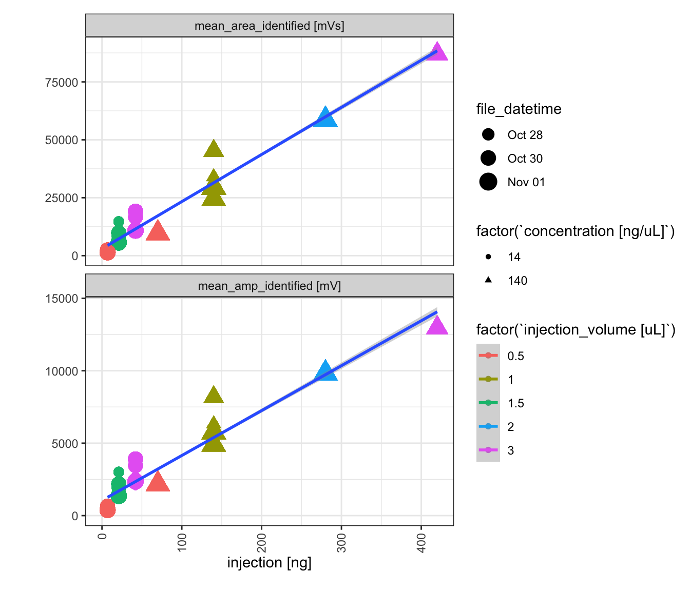
Isotope standard values
Load isotope standards
# this information is often maintained in a csv or Excel file instead
# but generated here from scratch for demonstration purposes
standards <-
tibble::tribble(
~compound, ~true_d13C,
"nC16", -26.15,
"nC17", -31.88,
"nC18", -32.70,
"nC19", -31.99,
"nC20", -33.97,
"nC21", -28.83,
"nC22", -33.77,
"nC23", -33.37,
"nC24", -32.13,
"nC25", -28.46,
"nC26", -32.94,
"nC27", -30.49,
"nC28", -33.20,
"nC29", -29.10,
"nC30", -29.84
) %>%
mutate(
type = "std",
true_d13C = iso_double_with_units(true_d13C, "permil")
)
standards %>% knitr::kable(digits = 2)| compound | true_d13C | type |
|---|---|---|
| nC16 | -26.15 | std |
| nC17 | -31.88 | std |
| nC18 | -32.70 | std |
| nC19 | -31.99 | std |
| nC20 | -33.97 | std |
| nC21 | -28.83 | std |
| nC22 | -33.77 | std |
| nC23 | -33.37 | std |
| nC24 | -32.13 | std |
| nC25 | -28.46 | std |
| nC26 | -32.94 | std |
| nC27 | -30.49 | std |
| nC28 | -33.20 | std |
| nC29 | -29.10 | std |
| nC30 | -29.84 | std |
Calibration
Single analysis calibration (for QA)
Generate calibrations
Determine calibrations fits for all individual standard analyses.
stds_w_calibs <- peak_table_w_stds %>%
# focus on standards
filter(type == "std") %>%
# remove unassigned peaks
iso_remove_problematic_peak_mappings() %>%
# prepare for calibration by defining the grouping column(s)
iso_prepare_for_calibration(group_by = Analysis) %>%
# run calibration
iso_generate_calibration(model = lm(d13C ~ true_d13C)) %>%
# unnest some useful file information for visualization
iso_get_calibration_data(
select = c(file_datetime, injection_volume, seed_oxidation, mean_area_identified))
#> Info: removing 6 of 426 peak table entries because of problematic peak identifications (unidentified, missing or ambiguous)
#> Info: preparing data for calibration by grouping based on 'Analysis'
#> Info: generating calibration based on 1 model ('lm(d13C ~ true_d13C)') for 28 data group(s) with standards filter 'is_std_peak'. Storing residuals in new column 'resid'. Storing calibration info in new column 'in_calib'.
#> Info: retrieving data column(s) 'c(file_datetime, injection_volume, seed_oxidation, mean_area_identified)', keeping remaining data in nested 'all_data'
# check for problematic calibrations
stds_w_calibs %>% iso_get_problematic_calibrations() -> problematic.calibs
#> Info: there were no problematic calibrations
# View(problematic.calibs)
# move forward only with good calibrations
stds_w_calibs <- stds_w_calibs %>% iso_remove_problematic_calibrations()
#> Info: there are no problematic calibrationsCoefficients
# look at coefficients and summary
stds_w_calibs %>%
# unnest calibration parameters
iso_get_calibration_parameters(
select_from_coefs =
c(term, estimate, SE = std.error, signif),
select_from_summary =
c(fit_R2 = adj.r.squared, fit_RMSD = deviance, residual_df = df.residual)) %>%
arrange(term) %>%
knitr::kable(digits = 4)
#> Info: retrieving coefficient column(s) 'c(term, estimate, SE = std.error, signif)' for calibration
#> Info: retrieving summary column(s) 'c(fit_R2 = adj.r.squared, fit_RMSD = deviance, residual_df = df.residual)' for calibration| Analysis | file_datetime | seed_oxidation | injection_volume | mean_area_identified | calib | calib_points | term | estimate | SE | signif | fit_R2 | fit_RMSD | residual_df |
|---|---|---|---|---|---|---|---|---|---|---|---|---|---|
| 2034 | 2017-10-26 03:15:48 | yes | 0.5 | 1.316609 | lm(d13C ~ true_d13C) | 15 | (Intercept) | 11.2671 | 0.9756 | *** (p < 0.001) | 0.9870 | 0.9521 | 13 |
| 2041 | 2017-10-26 14:50:38 | no | 3.0 | 10.728124 | lm(d13C ~ true_d13C) | 15 | (Intercept) | 10.3123 | 3.0026 | ** (p < 0.01) | 0.8869 | 9.0195 | 13 |
| 2047 | 2017-10-26 23:50:04 | yes | 3.0 | 13.834178 | lm(d13C ~ true_d13C) | 15 | (Intercept) | 11.2081 | 0.3546 | *** (p < 0.001) | 0.9983 | 0.1258 | 13 |
| 2093 | 2017-10-29 18:32:04 | yes | 0.5 | 2.032492 | lm(d13C ~ true_d13C) | 15 | (Intercept) | 12.0237 | 0.6659 | *** (p < 0.001) | 0.9941 | 0.4436 | 13 |
| 2099 | 2017-10-30 04:33:19 | yes | 0.5 | 2.497390 | lm(d13C ~ true_d13C) | 15 | (Intercept) | 10.3700 | 0.5911 | *** (p < 0.001) | 0.9949 | 0.3495 | 13 |
| 2114 | 2017-10-31 04:08:42 | yes | 1.5 | 5.675072 | lm(d13C ~ true_d13C) | 15 | (Intercept) | 11.3763 | 0.3359 | *** (p < 0.001) | 0.9984 | 0.1129 | 13 |
| 2035 | 2017-10-26 04:50:43 | yes | 1.5 | 5.356130 | lm(d13C ~ true_d13C) | 15 | (Intercept) | 10.8131 | 0.4285 | *** (p < 0.001) | 0.9974 | 0.1837 | 13 |
| 2096 | 2017-10-29 23:48:23 | yes | 1.5 | 8.855793 | lm(d13C ~ true_d13C) | 15 | (Intercept) | 11.2949 | 0.2081 | *** (p < 0.001) | 0.9994 | 0.0433 | 13 |
| 2100 | 2017-10-30 06:08:16 | yes | 1.5 | 9.864856 | lm(d13C ~ true_d13C) | 15 | (Intercept) | 11.1531 | 0.1618 | *** (p < 0.001) | 0.9996 | 0.0262 | 13 |
| 2115 | 2017-10-31 05:43:46 | yes | 3.0 | 10.838746 | lm(d13C ~ true_d13C) | 15 | (Intercept) | 11.2240 | 0.1824 | *** (p < 0.001) | 0.9995 | 0.0333 | 13 |
| 2139 | 2017-11-02 09:13:36 | yes | 1.0 | 29.445250 | lm(d13C ~ true_d13C) | 15 | (Intercept) | 11.2577 | 0.2570 | *** (p < 0.001) | 0.9991 | 0.0661 | 13 |
| 2032 | 2017-10-26 00:05:49 | yes | 1.5 | 5.237014 | lm(d13C ~ true_d13C) | 15 | (Intercept) | 11.2381 | 0.3698 | *** (p < 0.001) | 0.9981 | 0.1368 | 13 |
| 2036 | 2017-10-26 06:25:48 | yes | 3.0 | 10.256694 | lm(d13C ~ true_d13C) | 15 | (Intercept) | 10.8792 | 0.3646 | *** (p < 0.001) | 0.9981 | 0.1330 | 13 |
| 2045 | 2017-10-26 20:40:08 | yes | 0.5 | 1.786624 | lm(d13C ~ true_d13C) | 15 | (Intercept) | 10.8889 | 0.6412 | *** (p < 0.001) | 0.9943 | 0.4113 | 13 |
| 2056 | 2017-10-27 13:34:08 | yes | 1.5 | 14.721991 | lm(d13C ~ true_d13C) | 15 | (Intercept) | 11.0069 | 0.3724 | *** (p < 0.001) | 0.9981 | 0.1387 | 13 |
| 2075 | 2017-10-28 14:27:22 | yes | 1.5 | 6.011649 | lm(d13C ~ true_d13C) | 15 | (Intercept) | 11.2325 | 0.3605 | *** (p < 0.001) | 0.9982 | 0.1300 | 13 |
| 2097 | 2017-10-30 01:23:28 | yes | 3.0 | 16.704496 | lm(d13C ~ true_d13C) | 15 | (Intercept) | 11.3383 | 0.2171 | *** (p < 0.001) | 0.9993 | 0.0472 | 13 |
| 2101 | 2017-10-30 07:43:23 | yes | 3.0 | 19.140429 | lm(d13C ~ true_d13C) | 15 | (Intercept) | 11.0189 | 0.1998 | *** (p < 0.001) | 0.9994 | 0.0399 | 13 |
| 2136 | 2017-11-01 22:38:25 | yes | 0.5 | 9.705883 | lm(d13C ~ true_d13C) | 15 | (Intercept) | 10.9667 | 0.1148 | *** (p < 0.001) | 0.9998 | 0.0132 | 13 |
| 2140 | 2017-11-02 10:48:30 | yes | 2.0 | 58.566406 | lm(d13C ~ true_d13C) | 15 | (Intercept) | 10.7605 | 0.1660 | *** (p < 0.001) | 0.9996 | 0.0276 | 13 |
| 2033 | 2017-10-26 01:40:55 | yes | 3.0 | 9.967239 | lm(d13C ~ true_d13C) | 15 | (Intercept) | 11.0859 | 0.4703 | *** (p < 0.001) | 0.9969 | 0.2212 | 13 |
| 2046 | 2017-10-26 22:15:02 | yes | 1.5 | 7.189101 | lm(d13C ~ true_d13C) | 15 | (Intercept) | 11.1801 | 0.4632 | *** (p < 0.001) | 0.9970 | 0.2147 | 13 |
| 2060 | 2017-10-27 17:54:33 | no | 1.0 | 34.014913 | lm(d13C ~ true_d13C) | 15 | (Intercept) | 11.4129 | 0.8419 | *** (p < 0.001) | 0.9904 | 0.7091 | 13 |
| 2086 | 2017-10-29 07:58:06 | yes | 1.5 | 7.014310 | lm(d13C ~ true_d13C) | 15 | (Intercept) | 11.1096 | 0.1856 | *** (p < 0.001) | 0.9995 | 0.0345 | 13 |
| 2102 | 2017-10-30 09:18:16 | yes | 1.0 | 45.260003 | lm(d13C ~ true_d13C) | 15 | (Intercept) | 10.7432 | 0.4240 | *** (p < 0.001) | 0.9974 | 0.1798 | 13 |
| 2113 | 2017-10-31 02:33:47 | yes | 0.5 | 1.426427 | lm(d13C ~ true_d13C) | 15 | (Intercept) | 11.5001 | 1.0634 | *** (p < 0.001) | 0.9846 | 1.1312 | 13 |
| 2117 | 2017-10-31 08:53:43 | yes | 3.0 | 87.052984 | lm(d13C ~ true_d13C) | 15 | (Intercept) | 9.7739 | 1.1193 | *** (p < 0.001) | 0.9815 | 1.2534 | 13 |
| 2137 | 2017-11-02 00:13:18 | yes | 1.0 | 24.517030 | lm(d13C ~ true_d13C) | 15 | (Intercept) | 11.3123 | 0.1869 | *** (p < 0.001) | 0.9995 | 0.0350 | 13 |
| 2034 | 2017-10-26 03:15:48 | yes | 0.5 | 1.316609 | lm(d13C ~ true_d13C) | 15 | true_d13C | 1.0145 | 0.0311 | *** (p < 0.001) | 0.9870 | 0.9521 | 13 |
| 2041 | 2017-10-26 14:50:38 | no | 3.0 | 10.728124 | lm(d13C ~ true_d13C) | 15 | true_d13C | 1.0085 | 0.0958 | *** (p < 0.001) | 0.8869 | 9.0195 | 13 |
| 2047 | 2017-10-26 23:50:04 | yes | 3.0 | 13.834178 | lm(d13C ~ true_d13C) | 15 | true_d13C | 1.0137 | 0.0113 | *** (p < 0.001) | 0.9983 | 0.1258 | 13 |
| 2093 | 2017-10-29 18:32:04 | yes | 0.5 | 2.032492 | lm(d13C ~ true_d13C) | 15 | true_d13C | 1.0366 | 0.0213 | *** (p < 0.001) | 0.9941 | 0.4436 | 13 |
| 2099 | 2017-10-30 04:33:19 | yes | 0.5 | 2.497390 | lm(d13C ~ true_d13C) | 15 | true_d13C | 0.9830 | 0.0189 | *** (p < 0.001) | 0.9949 | 0.3495 | 13 |
| 2114 | 2017-10-31 04:08:42 | yes | 1.5 | 5.675072 | lm(d13C ~ true_d13C) | 15 | true_d13C | 1.0121 | 0.0107 | *** (p < 0.001) | 0.9984 | 0.1129 | 13 |
| 2035 | 2017-10-26 04:50:43 | yes | 1.5 | 5.356130 | lm(d13C ~ true_d13C) | 15 | true_d13C | 0.9995 | 0.0137 | *** (p < 0.001) | 0.9974 | 0.1837 | 13 |
| 2096 | 2017-10-29 23:48:23 | yes | 1.5 | 8.855793 | lm(d13C ~ true_d13C) | 15 | true_d13C | 1.0110 | 0.0066 | *** (p < 0.001) | 0.9994 | 0.0433 | 13 |
| 2100 | 2017-10-30 06:08:16 | yes | 1.5 | 9.864856 | lm(d13C ~ true_d13C) | 15 | true_d13C | 1.0066 | 0.0052 | *** (p < 0.001) | 0.9996 | 0.0262 | 13 |
| 2115 | 2017-10-31 05:43:46 | yes | 3.0 | 10.838746 | lm(d13C ~ true_d13C) | 15 | true_d13C | 1.0082 | 0.0058 | *** (p < 0.001) | 0.9995 | 0.0333 | 13 |
| 2139 | 2017-11-02 09:13:36 | yes | 1.0 | 29.445250 | lm(d13C ~ true_d13C) | 15 | true_d13C | 1.0149 | 0.0082 | *** (p < 0.001) | 0.9991 | 0.0661 | 13 |
| 2032 | 2017-10-26 00:05:49 | yes | 1.5 | 5.237014 | lm(d13C ~ true_d13C) | 15 | true_d13C | 1.0118 | 0.0118 | *** (p < 0.001) | 0.9981 | 0.1368 | 13 |
| 2036 | 2017-10-26 06:25:48 | yes | 3.0 | 10.256694 | lm(d13C ~ true_d13C) | 15 | true_d13C | 1.0001 | 0.0116 | *** (p < 0.001) | 0.9981 | 0.1330 | 13 |
| 2045 | 2017-10-26 20:40:08 | yes | 0.5 | 1.786624 | lm(d13C ~ true_d13C) | 15 | true_d13C | 1.0076 | 0.0205 | *** (p < 0.001) | 0.9943 | 0.4113 | 13 |
| 2056 | 2017-10-27 13:34:08 | yes | 1.5 | 14.721991 | lm(d13C ~ true_d13C) | 15 | true_d13C | 1.0071 | 0.0119 | *** (p < 0.001) | 0.9981 | 0.1387 | 13 |
| 2075 | 2017-10-28 14:27:22 | yes | 1.5 | 6.011649 | lm(d13C ~ true_d13C) | 15 | true_d13C | 1.0133 | 0.0115 | *** (p < 0.001) | 0.9982 | 0.1300 | 13 |
| 2097 | 2017-10-30 01:23:28 | yes | 3.0 | 16.704496 | lm(d13C ~ true_d13C) | 15 | true_d13C | 1.0123 | 0.0069 | *** (p < 0.001) | 0.9993 | 0.0472 | 13 |
| 2101 | 2017-10-30 07:43:23 | yes | 3.0 | 19.140429 | lm(d13C ~ true_d13C) | 15 | true_d13C | 1.0020 | 0.0064 | *** (p < 0.001) | 0.9994 | 0.0399 | 13 |
| 2136 | 2017-11-01 22:38:25 | yes | 0.5 | 9.705883 | lm(d13C ~ true_d13C) | 15 | true_d13C | 1.0030 | 0.0037 | *** (p < 0.001) | 0.9998 | 0.0132 | 13 |
| 2140 | 2017-11-02 10:48:30 | yes | 2.0 | 58.566406 | lm(d13C ~ true_d13C) | 15 | true_d13C | 0.9974 | 0.0053 | *** (p < 0.001) | 0.9996 | 0.0276 | 13 |
| 2033 | 2017-10-26 01:40:55 | yes | 3.0 | 9.967239 | lm(d13C ~ true_d13C) | 15 | true_d13C | 1.0076 | 0.0150 | *** (p < 0.001) | 0.9969 | 0.2212 | 13 |
| 2046 | 2017-10-26 22:15:02 | yes | 1.5 | 7.189101 | lm(d13C ~ true_d13C) | 15 | true_d13C | 1.0137 | 0.0148 | *** (p < 0.001) | 0.9970 | 0.2147 | 13 |
| 2060 | 2017-10-27 17:54:33 | no | 1.0 | 34.014913 | lm(d13C ~ true_d13C) | 15 | true_d13C | 1.0217 | 0.0269 | *** (p < 0.001) | 0.9904 | 0.7091 | 13 |
| 2086 | 2017-10-29 07:58:06 | yes | 1.5 | 7.014310 | lm(d13C ~ true_d13C) | 15 | true_d13C | 1.0049 | 0.0059 | *** (p < 0.001) | 0.9995 | 0.0345 | 13 |
| 2102 | 2017-10-30 09:18:16 | yes | 1.0 | 45.260003 | lm(d13C ~ true_d13C) | 15 | true_d13C | 0.9978 | 0.0135 | *** (p < 0.001) | 0.9974 | 0.1798 | 13 |
| 2113 | 2017-10-31 02:33:47 | yes | 0.5 | 1.426427 | lm(d13C ~ true_d13C) | 15 | true_d13C | 1.0174 | 0.0339 | *** (p < 0.001) | 0.9846 | 1.1312 | 13 |
| 2117 | 2017-10-31 08:53:43 | yes | 3.0 | 87.052984 | lm(d13C ~ true_d13C) | 15 | true_d13C | 0.9734 | 0.0357 | *** (p < 0.001) | 0.9815 | 1.2534 | 13 |
| 2137 | 2017-11-02 00:13:18 | yes | 1.0 | 24.517030 | lm(d13C ~ true_d13C) | 15 | true_d13C | 1.0120 | 0.0060 | *** (p < 0.001) | 0.9995 | 0.0350 | 13 |
# visualize the calibration coefficients
stds_w_calibs %>%
# plot calibration parameters
iso_plot_calibration_parameters(
# x-axis, could also be e.g. Analysis or file_datetime (also use date_breaks!)
x = mean_area_identified,
# aesthetics
color = seed_oxidation, size = mean_area_identified,
# highlight RSD threshold
geom_hline(data = tibble(term = factor("RSD"), threshold = 0.5),
mapping = aes(yintercept = threshold), linetype = 2)
) 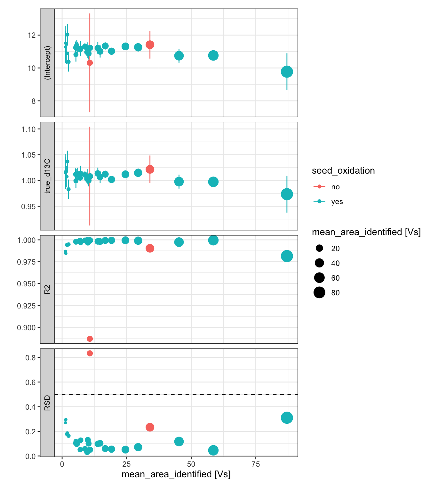
Residuals
stds_w_calibs %>%
# pull out all peak data to including residuals
iso_get_calibration_data() %>%
# focus on standard peaks
filter(is_std_peak) %>%
# calculate area deviation from mean
iso_mutate_peak_table(
group_by = Analysis,
area_dev = iso_double_with_units((area44/mean(area44) - 1) * 100, "%")
) %>%
# visualize
iso_plot_data(
# x and y
x = compound, y = c(residual = resid, `area dev. from mean` = area_dev),
# grouping and aesthetics
group = paste(Analysis, calib), color = seed_oxidation, linetype = calib,
# geoms
lines = TRUE
)
#> Info: retrieving all data
#> Info: mutating peak table grouped by 'Analysis', column(s) 'area_dev' added.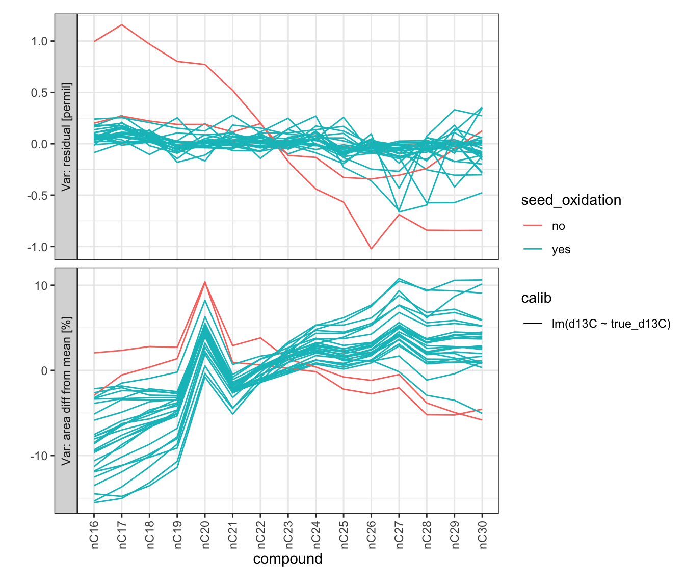
Global Calibration with all standards
Generate calibrations (*)
# define a global calibration across all standards
global_calibs <-
peak_table_w_stds %>%
# remove (most) problematic peaks to speed up calibration calculations
# note: could additionally remove unidentified peaks if they are of no interest
iso_remove_problematic_peak_mappings(remove_unidentified = FALSE) %>%
# prepare for calibration (no grouping to go across all analyses)
iso_prepare_for_calibration() %>%
# run different calibrations
iso_generate_calibration(
model = c(
linear = lm(d13C ~ true_d13C),
with_area = lm(d13C ~ true_d13C + area44),
with_area_cross = lm(d13C ~ true_d13C * area44)
),
# specify which peaks to include in the calibration, here:
# - all std_peaks (this filter should always be included!)
# - standard peaks between 5 and 100 Vs
# - only analyses with seed oxidation (same as all the samples)
use_in_calib = is_std_peak & area44 > iso_double_with_units(5, "Vs") &
area44 < iso_double_with_units(100, "Vs") & seed_oxidation == "yes"
) %>%
iso_remove_problematic_calibrations()
#> Info: removing 7 of 628 peak table entries because of problematic peak identifications (missing or ambiguous)
#> Info: preparing data for calibration by nesting the entire dataset
#> Info: generating calibration based on 3 models (linear = 'lm(d13C ~ true_d13C)', with_area = 'lm(d13C ~ true_d13C + area44)', with_area_cross = 'lm(d13C ~ true_d13C * area44)') for 1 data group(s) with standards filter '&...'. Storing residuals in new column 'resid'. Storing calibration info in new column 'in_calib'.
#> Info: there are no problematic calibrationsCoefficients
# look at coefficients and summary
global_calibs %>%
# unnest calibration parameters
iso_get_calibration_parameters(
select_from_coefs =
c(term, estimate, SE = std.error, signif),
select_from_summary =
c(fit_R2 = adj.r.squared, fit_RMSD = deviance, residual_df = df.residual)) %>%
arrange(term) %>%
knitr::kable(digits = 4)
#> Info: retrieving coefficient column(s) 'c(term, estimate, SE = std.error, signif)' for calibration
#> Info: retrieving summary column(s) 'c(fit_R2 = adj.r.squared, fit_RMSD = deviance, residual_df = df.residual)' for calibration| calib | calib_points | term | estimate | SE | signif | fit_R2 | fit_RMSD | residual_df |
|---|---|---|---|---|---|---|---|---|
| linear | 311 | (Intercept) | 11.0412 | 0.1113 | *** (p < 0.001) | 0.9962 | 5.9677 | 309 |
| with_area | 311 | (Intercept) | 11.0931 | 0.1028 | *** (p < 0.001) | 0.9967 | 5.0482 | 308 |
| with_area_cross | 311 | (Intercept) | 11.3321 | 0.1414 | *** (p < 0.001) | 0.9968 | 4.9521 | 307 |
| with_area | 311 | area44 | -0.0027 | 0.0004 | *** (p < 0.001) | 0.9967 | 5.0482 | 308 |
| with_area_cross | 311 | area44 | -0.0149 | 0.0050 | ** (p < 0.01) | 0.9968 | 4.9521 | 307 |
| linear | 311 | true_d13C | 1.0057 | 0.0036 | *** (p < 0.001) | 0.9962 | 5.9677 | 309 |
| with_area | 311 | true_d13C | 1.0057 | 0.0033 | *** (p < 0.001) | 0.9967 | 5.0482 | 308 |
| with_area_cross | 311 | true_d13C | 1.0133 | 0.0045 | *** (p < 0.001) | 0.9968 | 4.9521 | 307 |
| with_area_cross | 311 | true_d13C:area44 | -0.0004 | 0.0002 | * (p < 0.05) | 0.9968 | 4.9521 | 307 |
# visualize coefficients for the different global calibrations
global_calibs %>% iso_plot_calibration_parameters()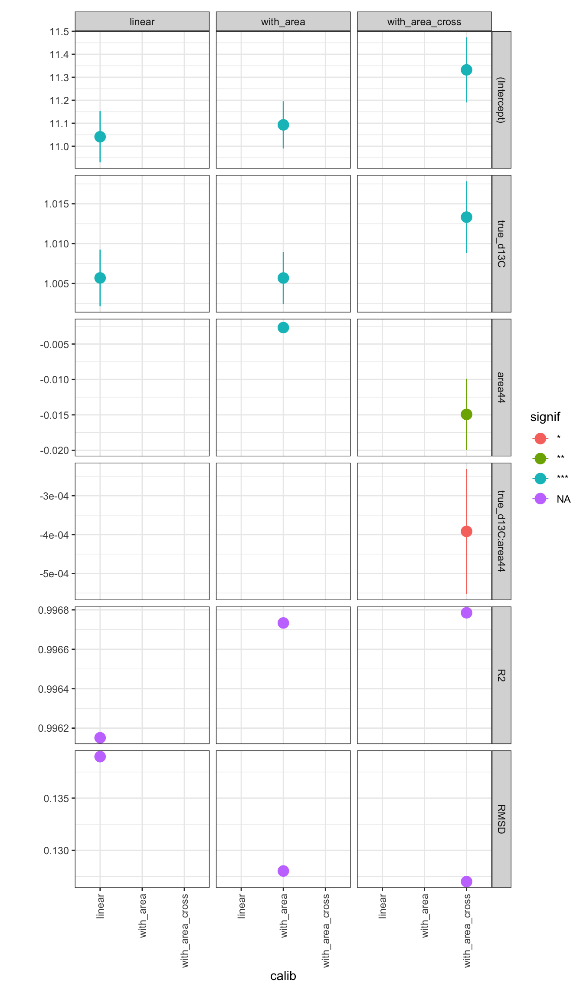
Residuals
global_calibs %>%
iso_plot_residuals(
x = compound, group = paste(Analysis, calib),
points = FALSE, lines = TRUE,
trendlines = FALSE, value_ranges = FALSE
) 
Apply global calibration (*)
# note that depending on the number of data points, this may take a while
# for faster calculations, chose calculate_error = FALSE
global_calibs_applied <-
global_calibs %>%
# which calibration to use? can include multiple if desired to see the result
# in this case, the area conscious calibrations are not necessary
filter(calib == "linear") %>%
# apply calibration indication what should be calcculated
iso_apply_calibration(true_d13C, calculate_error = TRUE)
#> Info: applying calibration to infer 'true_d13C' for 1 data group(s); storing resulting value in new column 'true_d13C_pred' and estimated error in new column 'true_d13C_pred_se'. This may take a moment... finished.
# calibration ranges
global_calibs_with_ranges <-
global_calibs_applied %>%
# evaluate calibration range for the measured area.Vs and predicted d13C
iso_evaluate_calibration_range(area44, true_d13C_pred)
#> Info: evaluating range for terms 'area44' and 'true_d13C_pred' in calibration for 1 data group(s); storing resulting summary for each data entry in new column 'in_range'.
# show calibration ranges
global_calibs_with_ranges %>%
iso_get_calibration_range() %>%
iso_remove_list_columns() %>%
knitr::kable(d = 2)
#> Info: retrieving all calibration range information for calibration| calib | calib_points | term | units | min | max |
|---|---|---|---|---|---|
| linear | 311 | area44 | Vs | 5.03 | 91.46 |
| linear | 311 | true_d13C_pred | permil | -34.09 | -25.94 |
Evaluation
Overview
# replicate earlier overview plot but now with the calibrated delta values
# and with a higlight of the calibration ranges and which points are in range
peak_table_calibrated %>%
# focus on identified peaks (comment out this line to see ALL peaks)
filter(!is.na(compound)) %>%
# visualize with convenience function iso_plot_data
iso_plot_data(
# choose x and y (multiple y possible)
x = area44, y = true_d13C_pred,
# choose aesthetics
color = in_range, shape = type, label = compound, size = 3,
# decide what geoms to include
points = TRUE
) %>%
# highlight calibration range
iso_mark_calibration_range() +
# further customize ggplot with a log scale x axis
scale_x_log10() +
# legend
theme(legend.position = "bottom", legend.direction = "vertical")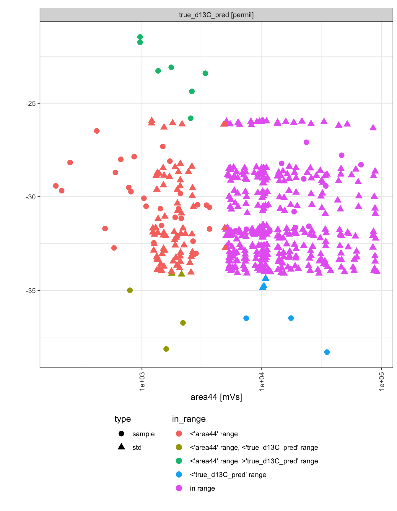
Standards
# visualize how standard line up after calibration
peak_table_calibrated %>%
# focus on peaks in calibration
filter(in_calib) %>%
# visualize
iso_plot_data(
# x and y
x = true_d13C, y = true_d13C_pred, y_error = true_d13C_pred_se,
# aesthetics
color = compound, size = area44,
# geoms
points = TRUE,
# add 1:1 trendline
geom_abline(slope = 1, intercept = 0)
) 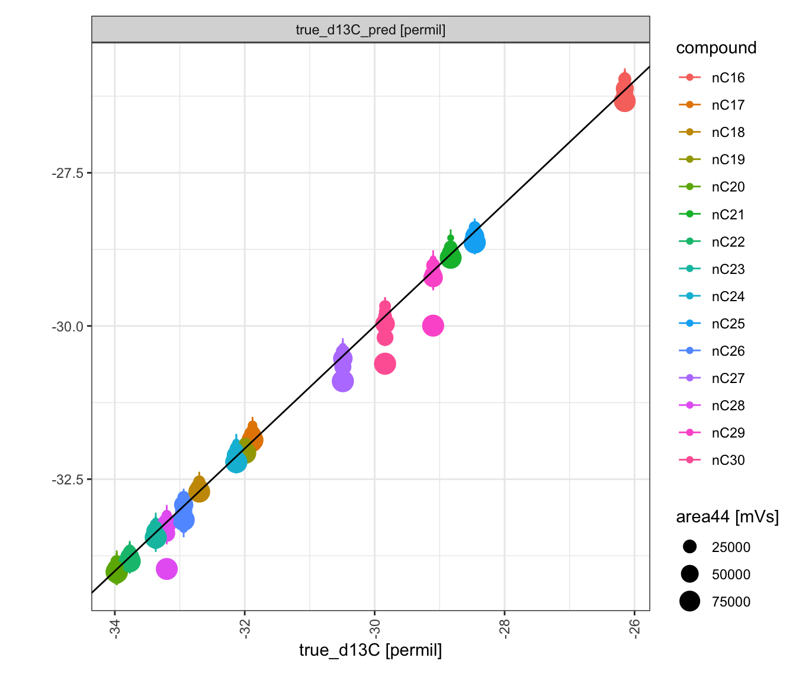
Data
Isotopic values
# Warning: data outside the calibration range MUST be taken with a
# grain of salt, especially at the low signal area/amplitude end
peak_table_calibrated %>%
# focus on samples
filter(type == "sample") %>%
# focus on identified peaks (comment out this line to see ALL peaks)
# if there's a lot of data, might need to hone in on a few at a time
filter(!is.na(compound)) %>%
# visualize
iso_plot_data(
# x and y
x = sample, y = true_d13C_pred, y_error = true_d13C_pred_se,
# aesthetics
color = in_range, size = rel_area,
# paneling
panel = compound, panel_scales = "fixed",
# geoms
points = TRUE
) %>%
# mark calibration range (include optionally)
iso_mark_calibration_range() +
# color palette (here example of manual: www.google.com/search?q=color+picker)
scale_color_manual(
values = c("#984EA3", "#E41A1C", "#E41A1C", "#377EB8", "#4DAF4A")
) +
# clarify size scale
scale_size_continuous(breaks = c(0.01, 0.05, 0.1, 0.2, 0.3),
labels = function(x) paste0(100*x, "%")) +
# plot labels
labs(x = NULL)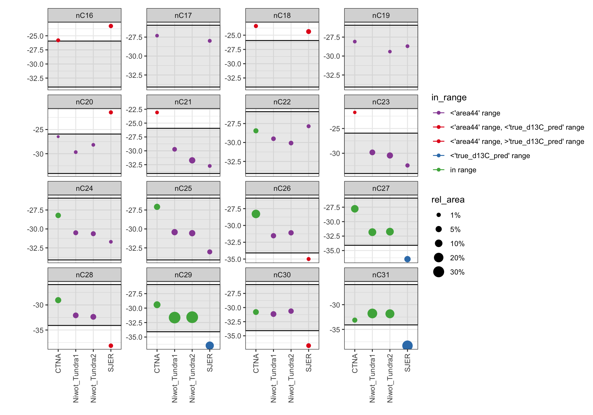
Relative abundances
# visualize relative abundances
peak_table_calibrated %>%
# focus on samples
filter(type == "sample") %>%
# focus on identified peaks (comment out this line to see ALL peaks)
#filter(!is.na(compound)) %>%
# visualize
iso_plot_data(
# x and y
x = sample, y = rel_area,
# aesthetics
fill = compound,
# barchart
geom_bar(stat = "identity")
) +
# scales
scale_y_continuous(labels = function(x) paste0(100*x, "%"), expand = c(0, 0)) +
# plot labels
labs(x = NULL, y = "Relative abundance (by area)")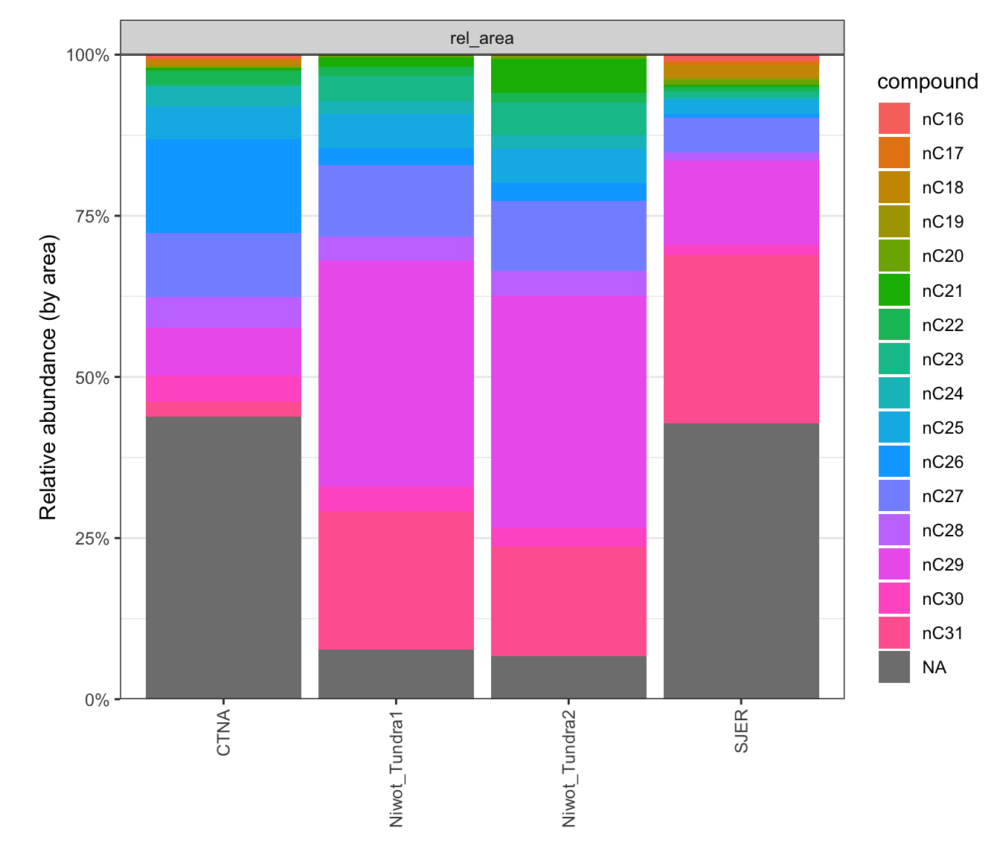
Summary
# generate data summary
peak_data <-
peak_table_calibrated %>%
# focus on identified peaks in the samples
filter(type == "sample", !is.na(compound)) %>%
select(sample, compound, Analysis,
area44, true_d13C_pred, true_d13C_pred_se, in_range) %>%
arrange(sample, compound, Analysis)
# summarize replicates
# this example data set does not contain any replicates but typically all
# analyses should in which case a statistical data summary can be useful
peak_data_summary <-
peak_data %>%
# here: only peaks within the area calibration range are included
# you have to explicitly decide which peaks you trust if they are out of range
filter(
in_range %in% c("in range", "<'true_d13C_pred' range", ">'true_d13C_pred' range")
) %>%
# summarize for each sample and compound
group_by(sample, compound) %>%
iso_summarize_data_table(area44, true_d13C_pred)
peak_data_summary %>% iso_make_units_explicit() %>% knitr::kable(d = 2)| sample | compound | n | area44 mean [Vs] | area44 sd | true_d13C_pred mean [permil] | true_d13C_pred sd |
|---|---|---|---|---|---|---|
| CTNA | nC22 | 1 | 10.53 | NA | -28.46 | NA |
| CTNA | nC24 | 1 | 14.63 | NA | -28.22 | NA |
| CTNA | nC25 | 1 | 23.56 | NA | -27.09 | NA |
| CTNA | nC26 | 1 | 67.20 | NA | -28.29 | NA |
| CTNA | nC27 | 1 | 46.40 | NA | -27.78 | NA |
| CTNA | nC28 | 1 | 22.36 | NA | -29.04 | NA |
| CTNA | nC29 | 1 | 34.20 | NA | -29.42 | NA |
| CTNA | nC30 | 1 | 18.60 | NA | -30.80 | NA |
| CTNA | nC31 | 1 | 10.82 | NA | -33.12 | NA |
| Niwot_Tundra1 | nC27 | 1 | 6.04 | NA | -31.82 | NA |
| Niwot_Tundra1 | nC29 | 1 | 19.08 | NA | -31.64 | NA |
| Niwot_Tundra1 | nC31 | 1 | 11.63 | NA | -31.78 | NA |
| Niwot_Tundra2 | nC27 | 1 | 7.44 | NA | -31.73 | NA |
| Niwot_Tundra2 | nC29 | 1 | 24.67 | NA | -31.57 | NA |
| Niwot_Tundra2 | nC31 | 1 | 11.65 | NA | -31.84 | NA |
| SJER | nC27 | 1 | 7.41 | NA | -36.49 | NA |
| SJER | nC29 | 1 | 17.53 | NA | -36.48 | NA |
| SJER | nC31 | 1 | 35.01 | NA | -38.30 | NA |
Final
Final data processing and visualization usually depends on the type of data and the metadata available for contextualization (e.g. core depth, source organism, age, etc.). The relevant metadata can be added easily with iso_add_file_info() during the initial data load / file info procesing. Alternatively, just call iso_add_file_info() again at this later point or use dplyr’s left_join directly.
Export
# export the global calibration with all its information and data to Excel
peak_table_calibrated %>%
iso_export_calibration_to_excel(
filepath = format(Sys.Date(), "%Y%m%d_gc_irms_example_carbon_export.xlsx"),
# include data summary as an additional useful tab
`data summary` = peak_data_summary
)
#> Info: exporting calibrations into Excel '20200428_gc_irms_example_carbon_export.xlsx'...
#> Info: retrieving all data
#> Info: retrieving all coefficient information for calibration
#> Info: retrieving all summary information for calibration
#> Info: retrieving all calibration range information for calibration
#> Info: export complete, created tabs 'data summary', 'all data', 'calib coefs', 'calib summary' and 'calib range'.